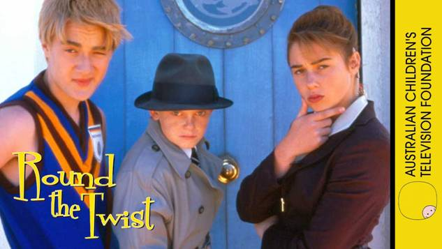

Patricia Edgar on Children's TV: Part One
Posted on August 17, 2017 by Nicholas Gruen

Many readers will have heard of Patricia Edgar who was a giant force in Australian cultural life from the 1970s. She more than anyone else was responsible for lifting the tone of children's TV in Australia. In any event I was talking to her recently about the current woes of children's TV and out of our conversation came a three part essay from Tricia the first part of which is below: Nicholas Gruen
Commercial Networks Versus Producers - Quotas for Children's Television
On May 6, 2017, the Minister for Communications, Mitch Fifield announced 'a broad ranging and comprehensive review of Australian and children's content' within a broader media reform package aimed at assisting free-to-air networks to remain viable in the highly competitive digital era. At the same time, the House Standing Committee on Communications and the Arts is inquiring into the 'factors contributing to the growth and sustainability of the Australian film and television industry'. These enquiries have come about because of the impact of digital technology on the free-to-air networks and have triggered off a battle royal between the networks and the producers with both groups acting from positions of self interest.
For forty years the networks have been opposed to children's television quotas. They've employed every tactic in the book to subvert successful programming. But for the first time they have a legitimate case as the child audience is now deserting scheduled television in droves for the Pied Piper of social media; the networks claim child audiences have gone down as low as 2000 viewers for a program.
The producers, who have enjoyed the most effectively regulated production system for children's programs anywhere in the world, are understandably, wanting to cling to the quotas and subsidies that have allowed some of them to establish profitable businesses. They want them expanded to include the ABC and pay television platforms. However they have shown few signs of adapting to the new technologies.
The rhetoric on both sides of the argument is extravagant and misleading with little attention given to the needs and interests of the audience they claim to serve.
In the 1960's and early 70's Australian children watched American sit-coms for their entertainment as school and community groups called vigorously for Australian programs. When the Children's Television Standards (CTS) were first mooted in 1976 in a report from the Australian Broadcasting Control Board (ABCB), the networks ridiculed the proposal. They claimed then they did not have the resources for such programming. They asserted they did not know what a children's program looked like, that Australian kids couldn't act and they would not watch such programs. They argued the high costs of technology in converting to colour in 1976 would consume all their revenue. But colour proved to be a bonanza.
Fortune then favoured the networks as Prime Minister Whitlam was sacked and Malcolm Fraser became Prime Minister. The Federation of Commercial Television Stations (FACTS) persuaded Fraser to sack the recalcitrant ABCB and set up a new regulatory authority, the Australian Broadcasting Tribunal (ABT), with a Chairman of their choosing. Bruce Gyngell a former Channel Seven and Nine Executive was appointed Chairman. Gyngell's first task was to chair the Self Regulation for Broadcasters? Inquiry and he came to the view the industry should accept the regulation of children's programs. The best laid plans went astray. Kerry Packer was furious and the two long term friends fell out for a time.
The ABT set up the Children's Program Committee (CPC) to implement the Standards in 1979, and the networks set out to undermine the process, first by withdrawing their representative from the Committee. Led by FACTS, which was dominated by Kerry Packer's Nine Network, the industry fought a vitriolic battle in the media condemning the ABT's proposals for C and P (pre-school) classified programs. Fifteen commercial television licensees challenged the validity of the ABT's power to classify programs, in the Federal Court. They lost, but pursued their argument in the High Court which held the ABT's Standards were invalid. Labor's Communication Minister, Michael Duffy then introduced an Amendment Bill affirming the ABT's powers. Finally the networks had no choice but to comply or risk losing their license. This entire process took eight years.
For the following decade the system of subsidy and regulation worked, in part because, as the networks had not prepared for losing their case, they had to buy the programs eager producers had in the pipeline. The Australian Children's Television Foundation (ACTF) was established, and along with other children's program producers, who shared a passion for their audience, they came up with a range of quality Australian stories which attracted the child audience and spawned both a domestic and international industry.
Australia had in place, a regulatory structure through the CTS and drama quota, subsidy through the FFC and state film bodies, an ACTF that demonstrated quality in children's programs and had drawn the attention of world broadcasters to Australian programs by winning awards. An industry concerned with quality had been created, despite network opposition, and Australian children were the beneficiaries.
But in 1995, with the best of intentions, the ABA made a strategic error. They doubled the quota and things began to unravel. It became simpler for the networks to fill their quotas with long-running series and animations which undermined the diversity of live-action programs. The bigger problem was that the Film Finance Corporation (FFC), the major source of funding for children's programs, was facing cut backs. In 1994 the FFC invested $ 20 million, 23% of its funding, into children's programs. By 1998 their investment had dropped to $9.3 million. This was when the drama quota doubled.
Networks, aware of this problem, drove down license fees and squeezed producers. They put pressure on the FFC to approve cheaper programming and pressure on the ABA to classify such programs C, but such programs inevitably fell short on quality expectations.
The problems were exposed by the ABA's evaluation of 20 Years of C, released in March 2000. This review demonstrated that, after a courageous beginning and a record demonstrating significant improvement in children's programming, the hard-won system was failing and children were once again missing out on the programs that had made a significant difference to their Australian cultural experience. But nothing was done to redress the problems.
The number of active live-action producers declined. Longer-running series increased, program diversity declined and animations soared. The networks continued to meet their quotas as cheaply as possible and buried programs in their schedules, doing nothing to promote them in order to attract an audience The values on which the children's drama quota had been based - giving a window into children's lives from their perspective - were undermined.
In this climate a number of producers realized there was money to be made out of the children's market through animations, merchandising and mediocre long running series that could be sold overseas to fill the voracious appetite of digital children's channels. Some producers effectively worked for overseas companies as production managers allowing them to access Australian funds while retaining creative control.
The claim that has remained the production industry mantra today is that producers are still 'creating quality programs' in 'the best interests of children'. But given the extent of public investment the highlights are few. The most iconic Australian children's program, one I produced, is Round the Twist and it is still named to support the quotas. Such a program could not be made today - the budget could not be achieved and production partners would sanitize the content and destroy its appeal. The evidence also shows children have come to be seen, not as individuals in an audience, who are there to be informed and entertained, but as a market.
Ironically Screen Australia's Convergence Report in 2011 pointed out Australian children didn't want to watch the Australian programs being made for them then, they preferred to watch thirty-five year old American sit-coms such as I Love Lucy, Bewitched, I Dream of Jeannie, Happy days and Mork and Mindy. We had come full circle. The latest report from ACMA on Children's television viewing and multi- screen behaviour, (August 2017) will give no comfort to those wanting to retain quotas. Children are not watching Australian produced children's television.